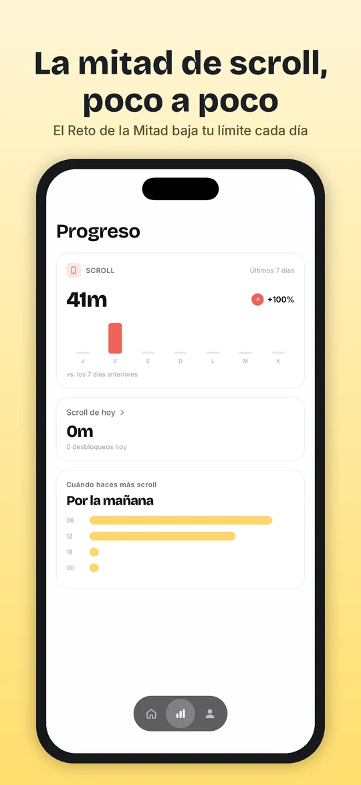

Cómo reducir el tiempo de pantalla a la mitad
Reducir tu tiempo de pantalla a la mitad suena a gran sacrificio, pero no hace falta hacerlo de un día para otro. Si recortas unos minutos cada día, apenas lo notas, y en pocas semanas has recuperado horas.
Un plan gradual
- Mira tu media diaria en Ajustes → Tiempo de uso. Ese es tu punto de partida real.
- Ponte como meta la mitad de esa cifra, no cero.
- Baja tu límite entre 5 y 15 minutos al día en lugar de todo de golpe.
- Quédate con lo que disfrutas y recorta primero el scroll sin sentido.
- Fíjate en la tendencia semanal, no en un mal día suelto.
El Reto de la Mitad de ScrollVolt
ScrollVolt hace las cuentas por ti. Eliges el ritmo (5, 10 o 15 minutos al día) y la app baja tu límite diario en esa cantidad hasta que hagas scroll la mitad que hoy. Mientras tanto, las apps que elijas comparten una batería de scroll que se recarga durante el día, y desbloqueas los minutos que quieras arrastrándola. Las sesiones de enfoque la cargan el doble de rápido. En la pantalla de progreso ves la gráfica de batería de hoy, tu tendencia semanal y el historial de cada sesión de scroll y de enfoque, así que notas el cambio en lugar de intuirlo.


Preguntas frecuentes
¿Por qué la mitad y no cero?
Cero es muy difícil de mantener. Con la mitad recuperas mucho tiempo y conservas lo que de verdad te gusta del móvil.
¿Cuánto se tarda en reducirlo a la mitad?
Depende de cuánto uses el móvil hoy y del ritmo que elijas. Pasar de dos horas diarias a una lleva unos 12 días a 5 minutos por día, o unos 4 días a 15 minutos.
¿Tengo que borrar las redes sociales?
No. ScrollVolt limita las apps que eliges sin borrarlas.
Prueba ScrollVolt en tu iPhone
ScrollVolt Premium es una suscripción anual con 3 días de prueba gratis que puedes cancelar cuando quieras en los ajustes de tu cuenta de Apple. ¿Prefieres pagar una sola vez? También hay un desbloqueo vitalicio.
Descárgalo en elApp Store